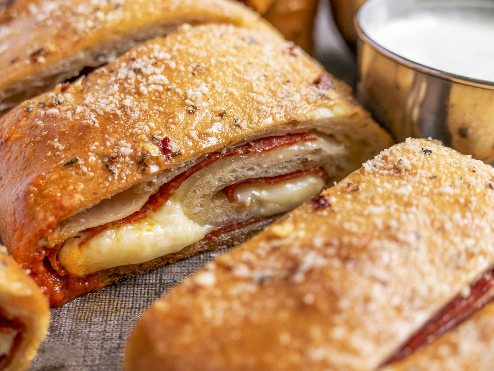

Pepperoni Bread

Ingredients
- 1 pkg or 2.5 tsp rapid-rise yeast
- 1 tbsp sugar
- 1 tsp salt
- 1 cup warm water
- 2 tbsp olive oil
- garlic powder
- oregano
- basil
- seasoned pepper
- red pepper flakes
- 2 cups flour
- 1/3 cup dry milk
- shredded mozzarella cheese
- large sliced pepperoni
Steps
- Dissolve yeast, sugar, salt in warm water with olive oil
- Add herbs to your liking - garlic powder, oregano, basil, seasoned pepper, red pepper flakes
- Add flour and dry milk
- Knead dough - adding additional flour if needed until no longer sticky
- Lightly coat dough with olive oil
- Place in bowl-cover to rise ~30 mins
- Spread dough on greased cookie sheet
- Layer the mozzarella cheese and pepperoni
- Roll into a tight log
- Let rise again ~30 mins
- Bake @ 350 degrees for 25-30 minutes